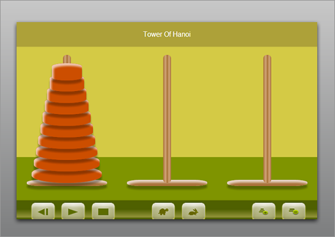

Towers of Hanoi Web Application
September 2, 2012
This note descibes the design and implementation of a simple Towers of Hanoi 'game'. The game will provide a graphical animation of moving disc from the leftmost pin to the rightmost one. The user controls the speed of the animation and how many discs to use. Also, there will be a way to stop, start, and reset the animation.
The app must be written using 'portable' HTML5 that will work in all major browsers. This will make it easy to create a hybrid version of the app, i.e. a native webview wrapped version.
Final Look
The game can be accessed here.
Requirements
- Must adapt to all screen sizes
- Must work in all major browsers
- Must be easy to convert to a hybrid app
Design Considerations
The first thing to note is that the visual elements of the app are all rectangles, e.g. discs, pins, plates, and control buttons. The width/height proportions of those rectangles are flexible and can be adjusted to fill out the available space on the screen. It would therefore make sense to have all those elements be HTML tags, whose width and height are dynamically adjusted.
The number of discs is variable, so dynamically creating the visual elements is the natural thing to do.
jQuery is a convenient framework for dynamically creating the HTML content and it provides a handy .animate method for animating the position of any element on the page, so it's a natural fit for what we need to do. jQuery is also a very convenient way to write 'browser independent' code. It abstracts away browser differences.
Virtual Coordinate System
In order to easily adjust the position and dimensions of the elements on the page, a virtual coordinate system is introduced. The idea is that the position and dimension of each element on the page is specified using 'virtual coordinates'. The virtual coordinate system will always have the same dimensions regardless of the actual dimensions of the view. The dimensions will be stretched or shrunk to fit. The idea is illustrated here:
The two illustrations above show how a red box is placed in a 30 x 30 virtual coordinate system. The red box has the virtual dimensions (17 x 6) and is placed with the top left corner at (10,5). The illustrations show how the virtual coordinate system and it's contained elements adapts to the dimension of the screen.
Overall Structure
Most of the JavaScript code listed, except for the definition of the Surface object (see later), is nested inside the jquery .ready function. The jQuery framework will invoke this function once all the necessary DOM elements have been loaded. It is set up as follows:
$(document).ready (function () {
... // this code is invoked when the DOM has loaded
}
Surface Object
To manage the objects added to the virtual coordinate system a dedicated object, Surface, is created. It will take care of managing the mapping between virtual coordinates and pixels on the screen. The outline for the constructor for this object is as follows:
function Surface (jelem, width, height) {
// Add an element to the surface
// jelem: jQuery object representing the DOM element
// x,y: Top left corner (virtual coordinates)
// w,h: Width and height of the element in (virtual coordinate sizes)
// return: An integer representing the created surface element
this.Add_Elem = function (jelem, x, y, w, h) {...};
// Remove an element from the surface
// ielem: index of the element to be removed. This must be a value returned
// by Add_Elem
this.Remove_Elem = function (ielem) {...};
// Sets the scaling of the virtual coordinates to actual pixel positions on
// the screen.
// pwidth,pheight: Pixel width and height of the surface that the virtual
coordinates must be mapped to
this.Set_Scale = function (pwidth, pheight) {...};
// Positions all the elements added to the surface based on the current
// scaling
this.Position_All = function () {...};
// Move an element from it's current position to a new one
// to_x, to_y: The virtual coordinates to move the element to
// callback: a function to be called when the move has occured. This is
// relevant when the move is animated and not happening
// instantly
this.Move_Elem = function (ielem, to_x, to_y, callback) {...};
// Change the duration of the animation of a move
// offset: The change to the current duration in milliseconds. The initial
// duration is 300ms
this.Change_Duration = function (offset) {...};
}
There's only one instance of this object and it is mapped to the only DOM element inside the body of the HTML document. All other DOM elements are dynamically created.
...
// create the jquery object corresponding to the DOM element holding the
// virtual coordinate system
var jsurface = $("#surface");
// create the surface object. Choosing a 30x30 coordinate system
var surface = new Surface (jsurface, 30, 30);
...
<BODY>
<DIV id="surface"></DIV>
</BODY>
The dimensions (30x30) is chosen somewhat arbitrarily. Note, it is possible to use fractional values for positions, so this is not limiting the granularity of sizes and positions of the elements on the surface.
Creating the Pins and Controls
The pins and control buttons are created with this function:
function Create_Pins () {
// create the jQuery object correspoding to the pins and plates
var jpin1 = $("<DIV></DIV>").addClass ("pin").appendTo (jsurface);
var jpin2 = $("<DIV></DIV>").addClass ("pin").appendTo (jsurface);
var jpin3 = $("<DIV></DIV>").addClass ("pin").appendTo (jsurface);
var jplate1 = $("<DIV></DIV>").addClass ("plate").appendTo (jsurface);
var jplate2 = $("<DIV></DIV>").addClass ("plate").appendTo (jsurface);
var jplate3 = $("<DIV></DIV>").addClass ("plate").appendTo (jsurface);
// Add the pins to the surface
var pin1 = surface.Add_Elem (jpin1, 4.5, 5, 1, 25);
var pin2 = surface.Add_Elem (jpin2, 14.5, 5, 1, 25);
var pin3 = surface.Add_Elem (jpin3, 24.5, 5, 1, 25);
var plate1 = surface.Add_Elem (jplate1, 1, 29, 8, 1);
var plate2 = surface.Add_Elem (jplate2, 11, 29, 8, 1);
var plate3 = surface.Add_Elem (jplate3, 21, 29, 8, 1);
}
function Create_Controls () {
surface.Add_Elem ($('<INPUT type="button" value="Start" />')
.addClass ("control").appendTo (jsurface).click (Start), 1, 1, 3, 1);
surface.Add_Elem ($('<INPUT type="button" value="Stop" />')
.addClass ("control").appendTo (jsurface).click (Stop), 5, 1, 3, 1);
surface.Add_Elem ($('<INPUT type="button" value="Reset" />')
.addClass ("control").appendTo (jsurface).click (Reset), 9, 1, 3, 1);
surface.Add_Elem ($('<INPUT type="button" value="+1 Disc" />')
.addClass ("control").appendTo (jsurface).click (Add1), 13, 1, 3, 1);
surface.Add_Elem ($('<INPUT type="button" value="-1 Disc" />')
.addClass ("control").appendTo (jsurface).click (Sub1), 17, 1, 3, 1);
surface.Add_Elem ($('<INPUT type="button" value="Faster" />')
.addClass ("control").appendTo (jsurface).click (Faster), 21, 1, 3, 1);
surface.Add_Elem ($('<INPUT type="button" value="Slower" />')
.addClass ("control").appendTo (jsurface).click (Slower), 25, 1, 3, 1);
}
The jQuery objects for the pins and plates are created by using the jQuery ($) function to create a <DIV> element to which a class is added with the addClass method. The .appendTo method is used to add the newly created DOM element as the last DOM element inside the jsurface parent DOM element. Note, the chaining of the jQuery methods calls. Each jQuery call will return a jQuery object representing the modified object. This stroke of genious is what makes this very convenient chaining pattern possible.
Each plate is 8 wide and is separated by 2. The right and leftmost plates are placed 1 from the edge. Each pin is 1 wide and 25 tall and placed in the middle of the plates and 5 down from the top. This is how the magical coordinates shown above have been decided on. Feel free to go over the math.
The controls are created as HTML <INPUT> elements. Besides adding a class to control the layout, a click handler is also set up for each. This specifies the JavaScript function to be invoked when the control is clicked. The handlers are simple functions that simply modify state variables to achieve the desired effects.
Creating and Removing the Discs
The discs are created by the function below:
function Create_Discs (disc_count) {
var max_width = 7;
var min_width = 3;
var width_step = (max_width - min_width)/(disc_count - 1);
var x_step = width_step/2;
var height = 20/disc_count;
var width = max_width;
var x = 1.5;
var y = 29 - height;
var discs = new Array ();
for (var i = 0; i < disc_count; ++i) {
var disc = $("<DIV></DIV>").addClass ("disc").css('background-color', colors [i]);
disc.appendTo (jsurface);
discs.push (surface.Add_Elem (disc, x, y, width, height));
x = x + x_step;
width = width - width_step;
y = y - height;
}
return discs;
}
Since we need to be able to have the user specify the number of discs, a parameter 'disc_count' is used by this function. The width of the discs ranges from 7 for the largest one, to 3 for the smallest one. The height of the discs is computed, so that the total height of the stack is 20. Another possibility is to have a constant disc height. It is easy to make that happen with a minor modification to the code above. Also, note that the background CSS property is set from an array of colors. This will make the discs have different colors.
Because the number of discs can vary, we might need to remove existing discs from the surface to make room for new ones. This is done with this function:
function Remove_Discs () {
if (typeof discs !== 'undefined') {
for (var i = 0; i < discs.length; ++i) {
var elem = surface.Get_Elem (discs [i]);
elem.jelem.remove();
surface.Remove_Elem (discs [i]);
}
delete discs;
}
}
The discs created are stored in the discs array during creation. That way we have their surface handles available when they must be removed from the surface. Note, that each disc needs to be removed from both the DOM and the surface. The removal from the DOM is done with the jQuery .remove() method and removal from the surface is done with the .Remove_Elem() method.
Handling Window Resizing
When the window is resized the mapping between virtual coordinates and pixels must be updated accordingly. This is handled by setting up a handler for the jQuery resize event as follows:
function Resize (width, height) {
jsurface.width (width);
jsurface.height (height);
surface.Set_Scale (width, height);
surface.Position_All ();
}
function Resize_To_Window () {
Resize ($(window).width(), $(window).height());
}
...
// do the initial sizing and positioning
Resize_To_Window ();
// setup handler to be called when window is resized
$(window).resize (Resize_To_Window);
The Resize_To_Window() function retrieves the pixel width and height of the window using the jQuery .width and .height methods. Those values are then used to set the pixel size of the DOM element representing the surface. The surface method to set the scaling and repositioning of all the elements kept track of; Position_All(), is called after the scaling factors have set with the call to Set_Scale (). The Resize_To_Window() function is set to be called whenever the window changes size using the jQuery .resize method.
Sequencing the Animation
The code to move a disc from one pin to another looks like this:
function Move_Disc (from_pin, to_pin, callback) {
var from_pin_discs = pins [from_pin];
var from_top_disc = pins [from_pin].pop ();
var x_move = (to_pin - from_pin)*10;
var elem = surface.Get_Elem (from_top_disc);
pins [to_pin].push (from_top_disc);
surface.Move_Elem (from_top_disc, elem.x, 5 - elem.h);
surface.Move_Elem (from_top_disc, elem.x + x_move, 5 - elem.h);
surface.Move_Elem (from_top_disc,
elem.x, 29 - elem.h*(pins[to_pin].length), callback);
}
The pins are indexed with 0,1,2 and the current position of where the discs are currently located are kept in arrays; one for each pin. The elements of those arrays are the surface identifier for the discs.
Each disc move is comprised of three individual moves; up to the top of the pin it curretnly sits on, across to the target pin, and then down to the top of the target pin. The distances to travel in the x and y direction is derived from the pin positions and the size of the stack on the target pin.
The reason for the callback parameter is to have a way to indicate to the caller when the moves have actually completed. Due to animation they don't happen instantaniously. When multiple animations are sequenced on the same elem jQuery will handle the sequencing just fine. However, it is not able to handle the sequencing when multiple elements needs to be sequenced, so this has to be dealt with 'manually'.
I chose to introduce a queue of moves that are processed in sequence:
function Move_Disc_Queue (from_pin, to_pin) {
queue.push ({from:from_pin, to:to_pin});
}
function Process_Queue () {
if (queue.length > 0 && state == 'running') {
var elem = queue.shift ();
Move_Disc (elem.from, elem.to, Process_Queue);
}
}
function Move_Stack (size, from, to, middle) {
if (size == 1) {
Move_Disc_Queue (from, to);
}
else {
Move_Stack (size-1, from, middle, to);
Move_Disc_Queue (from, to);
Move_Stack (size-1, middle, to, from);
}
}
Each call to Move_Disc_Queue () will simply build up the queue of moves in the queue array. Readers should recognize the standard recursive implementation of the Towers of Hanoi algorithm. When the queue is ready to be processed a call to Process_Queue () is issued. This will start processing the queue. Note, that Process_Queue is provided as the callback to be called when the current animation finishes, thereby causing the next disc to move. Also, note that the variable 'state' must be set to 'running' in order for the processing of the queue elements to continue. This allows the user to temporarily stop the animation at any time.
The standard array operations .push and .shift is used to add to the end of the queue and to remove the first element from the queue, respectively.
Responding to User Input
The handlers that were set up to deal with clicks on the controls are as follows:
function Start () {
if (state == 'stopped') {
state = 'running';
Process_Queue (); // get the queue going again
}
}
function Stop () {
state = 'stopped';
}
function Reset () {
if (state == 'stopped') {
Remove_Discs ();
discs = Create_Discs (number_of_discs);
pins [0] = discs.slice (0); // create a clone of the discs array
pins [1] = new Array ();
pins [2] = new Array ();
Resize_To_Window ();
delete queue;
queue = new Array ();
Move_Stack (pins [0].length, 0, 2, 1); // fill up the move queue
}
}
function Faster () {
surface.Change_Duration (-50);
}
function Slower () {
surface.Change_Duration (50);
}
function Add1 () {
if (state == 'stopped') {
if (number_of_discs < 14) {
number_of_discs += 1;
}
Reset ();
}
}
function Sub1 () {
if (state == 'stopped') {
if (number_of_discs > 2) {
number_of_discs -= 1;
}
Reset ();
}
}
The thing to note here is the use of the 'state' variable. It can take two values; 'stopped' and 'running'. Adding and subtracting from the number of discs can only be done in the 'stopped' state. The Reset() function will remove all the existing discs and create new ones based on the current number of discs selected and put them all on the starting pin. The initial duration of the animation is set to 301ms, and the change that happens each time the faster and slower buttons are clicked is 50ms. That means that the minimum duration is 1ms, which is the smallest granularity for dealing with time in JavaScript.
Making it Look Pretty
Finally, I added some CSS to make the elements look pretty and to remove borders, and remove the scroll bar.
This CSS removes the scroll bar and sets the borders of the BODY element to cover the entire window:
HTML {
overflow:hidden;
}
BODY {
margin:0;
}
The CSS for the pins, plates, discs, and controls looks very similar:
.pin
{
position:absolute;
border-radius:20px;
background: #ab733a; /* Old browsers */
background: -moz-linear-gradient(left, #ab733a 1%, #d1a578 30%, #ab733a 53%,
#d1a578 75%, #ab733a 100%); /* FF3.6+ */
background: -webkit-gradient(linear, left top, right top, color-stop(1%,#ab733a),
color-stop(30%,#d1a578), color-stop(53%,#ab733a),
color-stop(75%,#d1a578), color-stop(100%,#ab733a));
/* Chrome,Safari4+ */
background: -webkit-linear-gradient(left, #ab733a 1%,#d1a578 30%,#ab733a
53%,#d1a578 75%,#ab733a 100%); /* Chrome10+,Safari5.1+ */
background: -o-linear-gradient(left, #ab733a 1%,#d1a578 30%,#ab733a 53%,
#d1a578 75%,#ab733a 100%); /* Opera 11.10+ */
background: -ms-linear-gradient(left, #ab733a 1%,#d1a578 30%,#ab733a 53%,#d1a578
75%,#ab733a 100%); /* IE10+ */
background: linear-gradient(to right, #ab733a 1%,#d1a578 30%,#ab733a 53%,
#d1a578 75%,#ab733a 100%); /* W3C */
filter: progid:DXImageTransform.Microsoft.gradient( startColorstr='#ab733a',
endColorstr='#ab733a',GradientType=1 ); /* IE6-9 */
-webkit-box-shadow: 0 rgba(0,0,0,0.2) .5em 5px; /* drop shadow */
-moz-box-shadow: 0 rgba(0,0,0,0.2) .5em 5px; /* drop shadow */
box-shadow: 0 rgba(0,0,0,0.3) .5em 5px; /* drop shadow */
}
.disc {
position:absolute;
border-radius:20px;
-moz-box-shadow: 8px 0px 8px #333;
-webkit-box-shadow: 8px 0px 8px #333;
box-shadow: 8px 0px 8px #333;
height: 50px;
width: 100px;
display:block;
-moz-border-radius:75px;
-webkit-border-radius: 75px;
border-radius: 75px;
}
.plate {
position: absolute;
border-top: none;
border-bottom: none; /*1em double inherit; */
-webkit-border-radius: 7em / 1.5em;
-moz-border-radius: 7em / 1.5em;
border-radius: 7em / 1.5em;
color: hsl(25, 53%, 83%) !important;
background-color: hsl(25, 53%, 83%);
-webkit-box-shadow: inset rgba(255,254,255,0.6) 0 0.3em .3em,
inset rgba(0,0,0,0.15) 0 -0.1em .3em, /* inner shadow */
hsl(25, 53%, 83%) 0 .1em 3px, hsl(25, 37%, 83%) 0 .3em 1px,
/* color border */
rgba(0,0,0,0.2) 0 .5em 5px; /* drop shadow */
-moz-box-shadow: inset rgba(255,254,255,0.6) 0 0.3em .3em,
inset rgba(0,0,0,0.15) 0 -0.1em .3em, /* inner shadow */
hsl(25, 53%, 83%) 0 .1em 3px, hsl(25, 37%, 83%) 0 .3em 1px,
/* color border */
rgba(0,0,0,0.2) 0 .5em 5px; /* drop shadow */
box-shadow: inset rgba(255,254,255,0.7) 0.3em 0.4em .4em, /*inner shadow */
inset rgba(171, 115, 58, 1.0) 0 -3.1em 0,
/* color border */
rgba(0,0,0,0.3) 0 .5em 5px; /* drop shadow */
}
/* oval */
.oval {
position:absolute;
border-top: none;
border-bottom: none; /*1em double inherit; */
-webkit-border-radius: 7em / 1.5em;
-moz-border-radius: 7em / 1.5em;
border-radius: 7em / 1.5em;
color: hsl(55, 100%, 40%) !important;
background-color: rgba(204, 78, 0, 0.5); /*(hsl(55, 100%, 40%);*/
-webkit-box-shadow: inset rgba(255,254,255,0.6) 0 0.3em .3em,
inset rgba(0,0,0,0.15) 0 -0.1em .3em, /* inner shadow */
hsl(188, 100%, 20%) 0 .1em 3px, hsl(188, 100%, 20%) 0 .3em 1px,
/* color border */
rgba(0,0,0,0.2) 0 .5em 5px; /* drop shadow */
-moz-box-shadow: inset rgba(255,254,255,0.6) 0 0.3em .3em,
inset rgba(0,0,0,0.15) 0 -0.1em .3em, /* inner shadow */
hsl(188, 100%, 20%) 0 .1em 3px, hsl(188, 100%, 20%) 0 .3em 1px,
/* color border */
rgba(0,0,0,0.2) 0 .5em 5px; /* drop shadow */
box-shadow: inset rgba(255,254,255,0.7) 0.3em 0.4em .4em, /*inner shadow */
inset rgba(204, 78, 0, 1.0) 0 -3.1em 0,
/* color border */
rgba(0,0,0,0.3) 0 .5em 5px; /* drop shadow */
}
.control {
position:absolute;
text-decoration: none;
font: 24px/1em 'Droid Sans', sans-serif;
font-weight: bold;
text-shadow: rgba(255,255,255,.5) 0 1px 0;
-webkit-user-select: none;
-moz-user-select: none;
user-select: none;
padding: .5em .6em .4em .6em;
margin: .5em;
display: inline-block;
-webkit-border-radius: 8px;
-moz-border-radius: 8px;
border-radius: 8px;
border-top: 1px solid rgba(255,255,255,0.8);
border-bottom: 1px solid rgba(0,0,0,0.1);
background-image: -webkit-gradient(radial, 50% 0, 100, 50% 0, 0,
from( rgba(255,255,255,0) ), to( rgba(255,255,255,0.7) ));
background-image: -moz-radial-gradient(top, ellipse cover,rgba(255,255,255,0.7) 0%,
rgba(255,255,255,0) 100%);
background-image: gradient(radial, 50% 0, 100, 50% 0, 0, from( rgba(255,255,255,0) ),
to( rgba(255,255,255,0.7) ));
-webkit-transition: background .2s ease-in-out;
-moz-transition: background .2s ease-in-out;
transition: background .2s ease-in-out;
background-color: hsl(61, 100%, 20%);
-webkit-box-shadow: inset rgba(255,254,255,0.6) 0 0.3em .3em,
inset rgba(0,0,0,0.15) 0 -0.1em .3em, /* inner shadow */
hsl(61, 100%, 67%) 0 .1em 3px, hsl(61, 50%, 30%) 0 .3em 1px,
/* color border */
rgba(0,0,0,0.2) 0 .5em 5px; /* drop shadow */
-moz-box-shadow: inset rgba(255,254,255,0.6) 0 0.3em .3em,
inset rgba(0,0,0,0.15) 0 -0.1em .3em, /* inner shadow */
hsl(61, 100%, 67%) 0 .1em 3px, hsl(61, 50%, 30%) 0 .3em 1px,
/* color border */
rgba(0,0,0,0.2) 0 .5em 5px; /* drop shadow */
box-shadow: inset rgba(255,254,255,0.6) 0 0.3em .3em,
inset rgba(0,0,0,0.15) 0 -0.1em .3em, /* inner shadow */
hsl(61, 100%, 67%) 0 .1em 3px, hsl(61, 50%, 30%) 0 .3em 1px,
/* color border */
rgba(0,0,0,0.2) 0 .5em 5px; /* drop shadow */
}
The most important aspect of these are 'position:absolute'. If the positioning is not set to be absolute the positioning in the virtual coordinate system wont work.
The dropped shadow is added the same way to the pins, plates, and discs to give a 3D effect. Also rounded corners are added to the discs and pins.
Other Things to Consider
- The font-size of the text used in the control buttons doesn't resize with the window. There are two ways I can think of to make that happen; Either use an image for the control which is resized to fit in the control, or have the Position_All() function adjust the font size of all the elements kept track of as well.
- It seems to be the case that the resize event doesn't always fire when orientation is changed. To fix this the Resize_To_Window() function can be invoked when the orientationchange event fires.
- When clicking on the controls fast, some of those clicks might trigger the double-click-to-zoom behavior of some browsers (iOS). To prevent a zoom from happening zooming should be disabled. I believe this can be done with a META tag. I just haven't gotten around to it yet.
- When running the app in a mobil browser there's a way to get rid of the browser controls (back button, bookmark button, etc). This should be done to leave more space for the app.
- Make the dropped shadows and rounded corners show up in Internet Explorer
- To improve the 3D effects a radial gradient could be added to the discs, to make them appear round. The way radial gradients are dealt with by the different browsers are vastly different, so it'll be a good exercise.